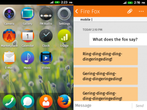

{kind=link}
Firefox OS 提供了 Web App 哪些 Moible Message 相關的 DOM API [[1]](https://hg.mozilla.org/releases/mozilla-b2g28_v1_3/file/0fd9f6fe8832/dom/mobilemessage/interfaces/nsIDOMMobileMessageManager.idl)，在此我們列出與收／送相關之介面如下：
- send (number, message, [optional] sendParameter) 發送簡訊 ：只需帶入電話號碼、文字內容，就能將簡訊發送到指定的電話號碼。
- sendMMS (parameter, [optional] sendParameter) 發送多媒體訊息 ：帶入 [[2]](https://hg.mozilla.org/releases/mozilla-b2g28_v1_3/file/0fd9f6fe8832/dom/webidl/MobileMessageManager.webidl) 所規範之參數格式包括收件者位址、主旨、文字內容與影音圖片等附件，即可將此多媒體訊息寄送到收件者位址。
- onsending 、 onsent 、 onfailed ：訊息發送中的狀態與最終發送結果。
- onreceived ：當手機收到新訊息時，主動回報的介面。
Mobile Message 架構圖：

- MobileMessageManager：提供了上個章節所提到 DOM API 實作的進入點。
- SMSIPCService：提供 Gaia 與 Gecko 間跨 process 的溝通管道。詳細內容已由 巧克力分享的“ 快來幫忙找，IPDL 在哪裡？”一文有更深入的說明。
- SmsService：負責從 RadioInterfaceLayer 選擇指定的 RadioInterface 發送簡訊。（由於目前 Firefox OS 已支援一機多卡的架構，所以有多個 RadioInterface 可供選擇。）
- RadioInterfaceLayer：負責與手機中的數據機模組作資訊的交換，其中包括：接/打電話、收/送簡訊、、行動上網、 SIM 卡管理等服務。
- MmsService：為 MMS 實作的核心，包含要求 RadioInterfaceLayer 建立 MMS 網路連線、編/解碼 MMS 封包、透過 XMLHTTPRequest 收／送 MMS 封包。
- MobileMessageDatabaseService：顧名思義，利用 IndexedDB ，將收／送的訊息保存在資料庫中，供 Web App 隨時存取所有的訊息記錄。
- MobileMessageService：負責產生一則 SMS／MMS 訊息對應的 DOM Object 供 Web App 做 UI 上的呈現。
介由以上的簡介希望能拋磚引玉，讓更多人了解 Firefox OS 的相關的實作，若有興趣參與，也可以參考由小圭分享的文章“我也想成為-mozillian！教你如何貢獻到-mozilla-code-base”，實際參與各項功能的開發喔！